Blog

Onramper and Exodus Launch Cross-Chain Swaps
Onramper partners can now integrate aggregated crypto swaps directly within their applications.
February 20, 2025 – Onramper, the world’s leading fiat-to-crypto on-ramp aggregator, today announced the launch of its cross-chain, crypto-to-crypto swaps service. Now, Onramper partners can integrate swaps directly within their applications, empowering users to seamlessly swap between cryptocurrencies with the most advanced liquidity engine on the market.
With Onramper’s new swaps aggregator, termed “Onramper Swap,” users can enjoy compliant, secure, and lightning-fast swaps of 100,000 tokens across 50+ networks. Onramper’s premium swap engine is powered by XO Swap by Exodus, which sources users the best rates across 11+ liquidity providers.
“Cross-chain decentralized swaps products are traditionally inefficient and offer limited support across blockchains,” said Thijs Maas, CEO of Onramper. “Onramper Swap was developed to address these gaps by enabling seamless swap aggregation across diverse liquidity sources, delivering a faster and more efficient user experience. We're thrilled to partner with Exodus, a leading industry innovator, to bring this powerful swap engine to a wider audience.”
The launch of cross-chain swaps marks an expansion of Onramper’s existing partnership with Exodus. Exodus integrated Onramper’s on-ramp stack in 2024 to broaden the range of payment methods available to its users, including options like Interac in Canada and Unified Payments Interface (UPI) in India. Exodus users benefit from Onramper's sophisticated routing engines that recommend the best conversion in real-time.
"Cross-chain swaps should be effortless, and that’s exactly what this integration delivers. With XO Swap powering Onramper’s latest offering, users gain access to deep liquidity, competitive rates, and institutional-grade security—all built and tested at scale," said Kevin Wood, Director of Revenue Operations at Exodus.
Onramper’s swaps product arrives on the heels of its recent off-ramp launch, making it possible to integrate the world’s best off-ramps in a single sweep and ensuring global coverage, diverse payout methods, and best-price execution. Today, Onramper offers industry leading on-ramp, off-ramp, and swap aggregation solutions.
Onramper Swap: Features and benefits
Unparalleled choice: Onramper Swap supports 100,000 tokens across 50+ networks including EVM, Bitcoin, XRP, SVM, and Cosmos.
Competitive rates: Liquidity is sourced from 11+ sources, both centralized and decentralized, ensuring the best rates available.
Fully customizable: Partners can customize Onramper Swap to match their branding and add logos for a fully native experience.
Enterprise ready: Onramper Swaps is powered by XO Swap, which is built and tested at scale by the Exodus team. Onramper’s offering can be integrated in 10 minutes through a seamless plug-and-play process.
Secure: With nine years of experience, Halborn audits, and an active bug bounty program, XO Swap is powered by premium security.
About Onramper
Onramper is the leading fiat-to-crypto payments aggregator, providing a turnkey API-based solution for dynamically routing fiat-to-crypto onramp flows based on algorithms optimizing for conversion, fees and payment methods. Onramper’s platform allows users of clients to buy 2000+ digital assets, in over 190 countries with over 130 payment methods in 120 currencies, with advanced routing options and unified analytics. The company is based in the Netherlands. To learn more about Onramper, visit www.onramper.com.
About Exodus
Exodus is a financial technology leader empowering individuals and businesses with secure, user-friendly crypto software solutions. Since 2015, Exodus has made digital assets accessible to everyone through its multi-asset crypto wallets prioritizing design and ease of use.
With self-custodial wallets, Exodus puts customers in full control of their funds, enabling them to swap, buy, and sell crypto. Its business solutions include Passkeys Wallet and XO Swap, industry-leading tools for embedded crypto wallets and swap aggregation.
Exodus is committed to driving the future of accessible and secure finance. Learn more at www.exodus.com or follow us on X at www.x.com/exodus.

Mistakes wallets make when designing their on-ramp flows
Common UX flaws in wallets onramping flows.
When it comes to fiat on-ramping, UX is king. And while the UX of ramps providers certainly leave a lot to be desired - UI bugs, mediocre card conversion, clunky Know-Your-Customer processors - there’s also a lot that’s in control of the wallets that integrate these services.
Currency localization
Imagine going to a webstore where products are denominated in the wrong currency. You’ll think “this isn’t for me” and leave.
Yet across the top cryptocurrency wallets, it is common for fiat currencies to not be localized. In fact, in most of the top 10 wallets in the space, I had to manually try and find a way to change the fiat currency.
Some will argue that lack of localization of fiat currencies exists for privacy reasons. But users looking to buy crypto with fiat have to go through Know-Your-Customer (KYC) anyway, which includes filling in their physical address - and often even uploading their passport.
Of course, whether a ramp provider’s services can even be used depends on both fiat currency and country support, so providing a list of ramp options without localisation just results in sending users down dead paths.
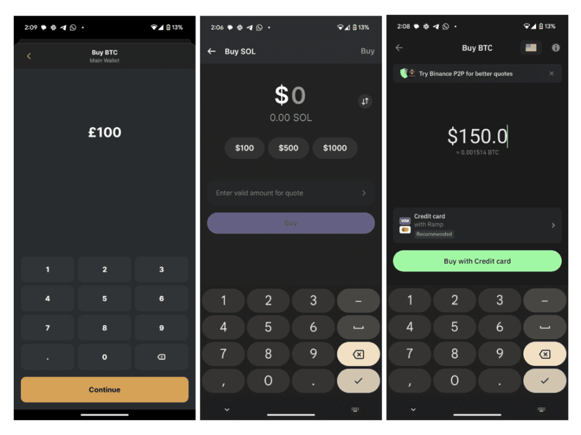
Default amounts
In a number of wallets - including leading wallets like MetaMask and Phantom - the default amount displayed is 0. Have you ever wanted to buy $0 worth of cryptocurrency? Probably not.
So how should we think about default amounts?
In my view, the best way to approach default amounts is to use a round number that is higher than the median purchase.
This median changes from country to country, as the average transaction amount in Nigeria, for example, will be lower than in the United States. Therefore, the median should be determined on a country-by-country basis.
The amount displayed should adjust depending on the fiat currency, as at the time of writing every dollar is worth 1577 Nigerian Naira (not a very round number).
Payment method choice
Ask people from the Netherlands, India, Nigeria, the United States and the Philippines which payment methods they want to use to buy crypto, and each will give an entirely different answer.
Yet, the majority of the top cryptocurrency wallets do not support most of the payment methods that will be mentioned.
Other wallets have created flows with ramp providers that support many APMs, without creating a “payment method” selector. This results in the user not being able to compare the difference in price between payment methods.
In addition, any onramp provider that has more than 10 payment methods will be able to tell you how this quickly results in integrations becoming outdated, with the list of payment methods displayed to the user not reflecting what is actually supported (see below).
Payment method localization
For those wallets that do have a range of local payment methods enabled, credit cards are often selected as the default option, despite cards having notoriously bad conversion rates when it comes to buying cryptocurrencies.
Needless to say, it is important to localise payment methods and recommend the best payment methods to users (so important, in fact, that I’ve dedicated a separate article about it here).
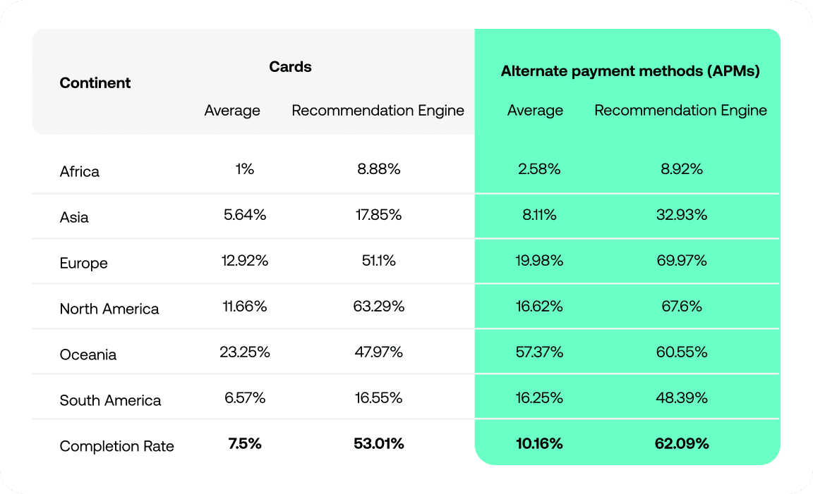
Closing thoughts
It is time for us to build flows users enjoy. Next week I will cover on-ramp selection in part 2 of this series.
I invite everyone - client or not - to have OnRamper analyze your app. We’ll do a free analysis to identify the good, the bad, and the ugly. Schedule a call via the link above and reply with: "Please analyze my current setup."
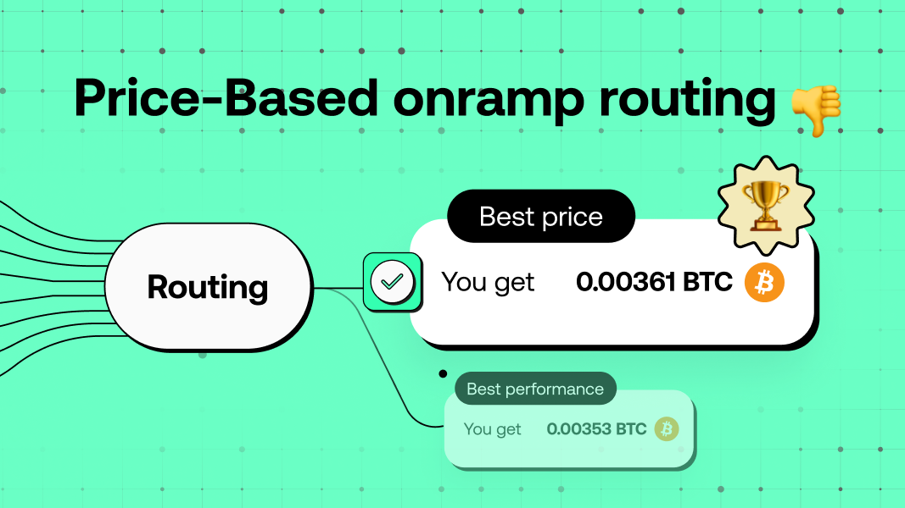
Why you should not rank onramps based on fees
Why Priced-based ranking is not the best choice?
Price-based ramp ranking sounds logical—cheaper is better, right?
Wrong. This approach is deeply flawed, and it’s hurting your platform more than you realize. Why?
Because ramp providers are gaming the system.
They know that by initially offering the lowest price, they can move to the top of your list. But here's the kicker: once they’ve secured the transaction, they hike the price during the transaction flow, leaving your users to pay more than they bargained for.
It’s an all-too-common occurrence. In fact, if you’re a top-tier wallet, it’s happening to you right now, and it’s probably being done by multiple ramp providers.
At Onramper, we call this sneaky practice “quote spoofing”, and it’s been happening across the industry for years.
Here’s how you can check if this happens in your app:
- Enter an amount of fiat to buy for, and go to the ramp comparison screen.
- Write down the amount of crypto offered by each ramp provider, and open all onramp widgets.
- Click-through to the end of the transaction in each widget, and write down the final crypto received.
- Compare the amounts from step 1 and step 3.
Trust erosion and lost users
What’s the real impact of quote spoofing? First and foremost, it breaks trust.
Your users come to your platform expecting transparency and the best experience to access crypto. But when they see prices increase mid-transaction, they feel deceived. Shattered trust isn’t easy to repair.
As conversion rates drop, so does your onboarding volume. That’s a direct hit to your growth, all because price was prioritized over actual conversion rates and user experience.
What’s worse, this practice doesn’t just frustrate users—it also makes their transactions more expensive, which pushes them away even more.
Most ramp providers have been guilty of quote spoofing at one time or another. It’s not because they’re inherently bad actors, but rather because price-based ranking encourages this behavior.
The problem is systemic. Perverse incentives force ramp providers to prioritize getting picked over being transparent. To insiders, it is a known problem, and one that Onramper has been tackling for years.
Onramper Terminal: A window into the problem
Onramper's clients have been made aware of this practice for a long time. Thanks to the Onramper Terminal, they have insights into the accuracy of quotes and effective fees, giving them the information they need to prevent quote spoofing.
The Onramper Terminal shines a light on the murky tactics some ramp providers use, providing your platform with the data needed to call them out or change routing for bad actors.
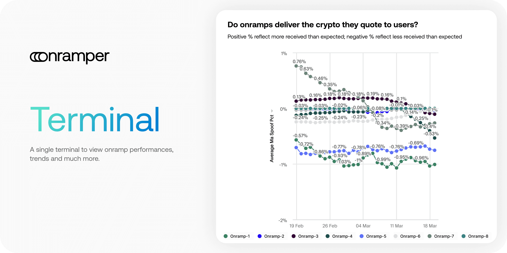
In the Fee Transparency Dashboard that comes with Onramper Enterprise, for example, you get perfect insight into ‘quote accuracy’, showing exactly which ramp providers are guilty of quote spoofing in your ramps marketplace and by how much.
The Onramper Terminal also gives you visibility into how ramps are actually performing. Instead of just relying on price, you can see metrics on quote accuracy, conversion rates, payment authorization rates, and payment methods across your entire ramps stack.
This allows you to offer your users an experience that’s not only fair but also optimizes for successful transactions.
User loss = lower conversions
Here’s the bottom line: relying on price alone to rank ramps is costing you. It's ripping off your users and results in ramp providers gaming the system and sub-optimal UX.
When users abandon transactions halfway through because of price spikes, your conversion rates plummet.
Onramps offering lowball quotes just to get picked initially, only to increase prices later, results in more than just bad user experience—it results in fewer completed lifetime transactions.
And the fewer transactions that go through, the fewer users you onboard. In short, it’s the opposite of what your platform needs.
Moving beyond price-based ranking
So, what’s the fix?
It’s simple: rank based on more factors than price alone. Platforms that include other metrics, like expected success rates, KYC friction, and payment method compatibility alongside price see higher user satisfaction and better conversion rates.
Imagine offering your users the best onramp for their specific situation, not just the one offering the lowest (and often misleading) quote.
The result? A better experience for your users and higher completion rates for you. Onramper is leading the charge by providing advanced onramp routing based on pricing, success rate data and user-friction.
The best part? Our onramp recommendations boost your conversion rates beyond what you think is possible. (More on this in next week’s post!)
Curious to your thoughts,
Thijs
thijs@onramper.com
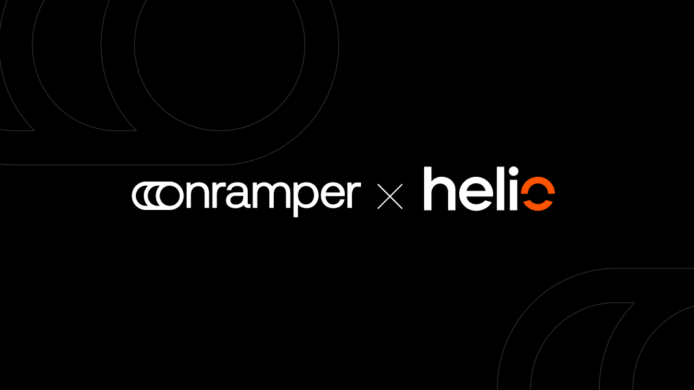
Helio Partners with Onramper to Power Unique Card to Stablecoin Payments for Global Merchants
Onramper’s industry-leading aggregator will localize payment methods for merchants looking to accept instant stabelcoin payments.
May 20, 2025 – Onramper, the world’s leading fiat-to-crypto on-ramp aggregator, today announced a partnership with Helio to supercharge stablecoin payments for global merchants. Helio, a leading crypto checkout app used by over 6,000 merchants and millions of users, has advanced the adoption of crypto payments by offering a faster, more affordable alternative to traditional methods.
To date, Helio has processed over $1.5 billion in transactions and integrates with leading digital platforms, including Shopify, where it powers the popular Solana Pay plugin. Now, the company is launching a revamped payment flow that enhances the onboarding experience for new users that don’t already have a crypto wallet when completing purchases with stablecoins such as USDC.
Now when Helio users select “Pay with Card”, they’re guided through a localized payment method selection screen tailored to their region powered by Onramper’s industry leading on-ramp aggregator and smart routing engine. Users can quickly fund a virtual crypto wallet tied to their email by purchasing USDC and easily complete their payment to the merchant. This seamless fiat-to-crypto flow unlocks valuable new commerce use cases for merchants, including instant settlement from credit card purchases (instead of next day settlement), zero chargeback risk, seamless iGaming deposits via cards, global support for high risk payments and more.
Stablecoin usage continues to rise – recent reports show retail usage increased by 35% in 2024 as consumers increasingly turn to stablecoins for e-commerce to avoid banking delays.
“Collaborating with Helio to enable stablecoin payments is a major step toward bringing crypto commerce to Web2-native users,” said Thijs Maas, CEO of Onramper. “Our aggregation engine delivers localized on-ramps and payment methods, making it easier for users to check out.”
Onramper accepts 130+ payment methods and enables users to purchase crypto across 190+ countries. This extensive geographic coverage is complemented by sophisticated routing engines that recommend the best conversion for users in real-time – maximizing users’ odds of a successful transaction and ensuring they receive the most crypto for their fiat.
"Helio is known as the market leader in native crypto payments, offering low fees and instant settlement. With the integration of Onramper, we’ve expanded backwards compatibility with the traditional financial system. This allows Helio merchants like Liquid Brokers and Bizcuits to accept instant card payments in over 130 countries through seamless fiat to stablecoin onramps. This results in increased sales for our merchants and a faster, smoother checkout experience for customers at Helio-powered stores. It’s a big step toward making crypto payments as seamless as traditional ones, especially for those new to crypto or looking to top up quickly." said Stijn Paumen, CEO of Helio.
“At Bizcuits, we support trading brokers and prop firms with operational solutions, including payments infrastructure. We integrated Helio for card-to-crypto payments because of its seamless experience, transparent pricing, and global reach. It enables our partners to offer reliable fiat-to-crypto onramps without added complexity, making Helio a natural fit for our ecosystem.” Debbie Colerio, Payments and Compliance Manager, Bizcuits
To learn more, please visit onramper.com and hel.io.
About Helio
Helio provides a suite of payment tools for merchants, creators and platforms, making it easy for anyone to accept USDC and other digital currencies. Designed for ease of use, especially those new to crypto payments, Helio is a faster and more cost effective alternative to traditional payment methods. Empowering over 6,000 sellers and over one million users, Helio supports major blockchains including Solana, Bitcoin, Ethereum and L2s.
About Onramper
Onramper is the leading fiat-to-crypto payments aggregator, providing a turnkey API-based solution for dynamically routing fiat-to-crypto onramp flows based on algorithms optimizing for conversion, fees and payment methods. Onramper’s platform allows users of clients to buy 2000+ digital assets, in over 190 countries with over 130 payment methods in 120 currencies, with advanced routing options and unified analytics. The company is based in the Netherlands. To learn more about Onramper, visit www.onramper.com.
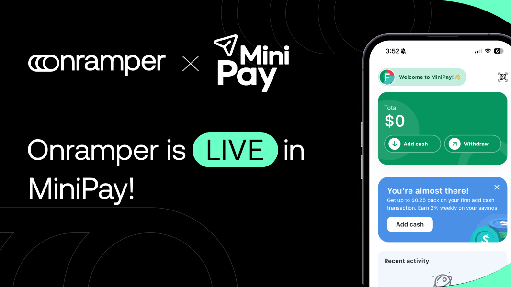
Onramper Partners with Opera’s MiniPay to Expand Global Access to Stablecoins
MiniPay will tap into Onramper’s industry-leading on- and off-ramp aggregation infrastructure to broaden stablecoin accessibility.
May 13, 2025 – Onramper, the world’s leading fiat-to-crypto on-ramp aggregator, today announced a partnership with MiniPay – Opera’s stablecoin wallet – to expand the accessibility and utility of stablecoins for users worldwide. Stablecoins are rapidly gaining momentum as a medium of exchange, facilitating remittances and streamlining cross-border payments while promoting financial stability and inclusion. In 2024 alone, annual stablecoin transfer volume reached $27.6 trillion – surpassing the volumes of Visa and Mastercard combined.
Opera, the global web innovator with nearly 300 million users, first unveiled MiniPay in September of 2023 as an embedded feature within Opera Mini – the browser of choice for users across Africa. A dollar stablecoin wallet built on Celo, MiniPay offers seamless global peer-to-peer transfers at sub-cent fees using simply mobile phone numbers. It features easy onboarding with key backup through Google and now iCloud.
Since its launch, MiniPay has grown to over 7 million activations across 50+ countries, enabling fast, secure, and intuitive stablecoin transactions with an emphasis on accessibility and utility.
Today, MiniPay will tap into Onramper’s industry-leading on- and off-ramp aggregation infrastructure to broaden stablecoin accessibility.Onramper supports 25+ onramps and 130+ local payment methods, while its off-ramp product covers seven off-ramps, supporting 46 fiat currencies and 500+ cryptocurrencies.
“Stablecoins have emerged as one of the most impactful use cases for digital assets, with regions like Latin America embracing them for low-cost remittances and as a hedge against monetary instability,” said Thijs Maas, CEO of Onramper. “Collaborating with MiniPay allows us to onboard more users in SEA, LatAm, and beyond into the stablecoin ecosystem, using a gateway as simple as a mobile phone number to get them started.”
As of May 13, 2025, MiniPay officially launches as a standalone app for iOS, meaning it is now present both within Opera Mini and the Google Play and App Stores, making it a truly global stablecoin wallet. Key features of MiniPay include:
- Send and receive stablecoins in seconds using just a phone number
- Buy and sell USDT, USDC, and cUSD stablecoins with zero fees
- Access real-world use cases like paying for utilities, buying gift cards, redeeming vouchers, and more
- Localized cash-in and cash-out across a variety of local currencies
“MiniPay isn’t just another Web3 wallet, it’s a product designed for people who live globally, work remotely, and need fast, affordable access to digital dollars. Onramper gives us the rails to make that experience seamless for users around the globe,” said Jørgen Arnesen, EVP of Mobile at Opera.
MiniPay is now live across iOS and Android in countries including the US, Canada, Brazil, Germany, Nigeria, Kenya, Ghana, South Africa, and more. You
To learn more, please visit onramper.com and minipay.xyz.
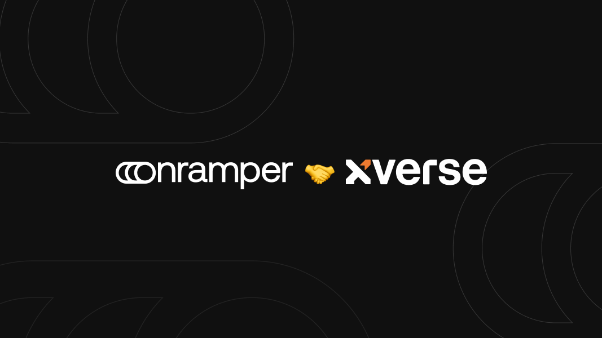
Xverse Partners with Onramper to Expand Global Accessibility to Bitcoin
Xverse Partners with Onramper to Expand Global Accessibility to Bitcoin
May 8, 2025 – Onramper, the world’s leading fiat-to-crypto onramp aggregator, today announced a partnership with Xverse to expand global accessibility to Bitcoin and its related assets. As crypto adoption accelerates – driven by rising institutional activity and favorable regulatory conditions – Xverse’s Bitcoin wallet provides a seamless gateway to Bitcoin, Runes, Ordinals, BRC-20 tokens, Rare Sats, STX, and more.
In Q1 2025, Bitcoin’s market dominance surged by 4.6%, accounting for over 59% of the total crypto market cap – its highest level since early 2021. As more users worldwide look to engage with the digital asset, Onramper’s partnership with Xverse enables them to fund their Bitcoin wallets using 130+ payment methods, from Apple Pay and Google Pay, to hyper-local payment methods across 190+ countries.
Further, Onramper’s industry-leading onramp aggregator is complemented by sophisticated routing engines that recommend the best conversion for users in real-time — maximizing their odds of a successful transaction and ensuring they receive the most crypto for their fiat.
“Bitcoin has demonstrated remarkable maturity and growth over the past year, driven by factors like Bitcoin ETFs in the U.S. and increasingly friendly crypto policies,” said Thijs Maas, CEO of Onramper. “Collaborating with Xverse enables us to help onboard more users into the Bitcoin ecosystem and enhance the experience of those already engaging in the Bitcoin economy.”
With a growing userbase and nearly 2 million downloads, Xverse is the leading Bitcoin Web3 wallet supporting Ordinals, Runes trading and BRC-20 inscriptions. Its user-friendly interface on iOS, Android, and Chrome extension sets a new standard for Bitcoin wallets and plays a key role in driving mainstream adoption.
"Xverse, powered by our new Onramper integration, makes advanced Bitcoin capabilities like on-chain trading and DeFi seamlessly accessible worldwide,” said Ken Liao, Xverse founder and CEO. “We're bridging the gap from enthusiasts to everyday users, unlocking Bitcoin's full potential for everyone with unparalleled speed and simplicity."
To learn more, please visit onramper.com and xverse.app.
About Xverse
Xverse is the leading Bitcoin wallet for Web3, providing first-class support for Runes, Ordinals, NFTs, DeFi and decentralized applications. With a beautifully designed, easy-to-use wallet available on iOS, Android and desktop as a Chrome browser extension, Xverse lets users securely manage Bitcoin on layer 1 as well as layer 2 networks like Stacks, and soon, the Lightning Network.
About Onramper
Onramper is the leading fiat-to-crypto payments aggregator, providing a turnkey API-based solution for dynamically routing fiat-to-crypto onramp flows based on algorithms optimizing for conversion, fees and payment methods. Onramper’s platform allows users of clients to buy 2000+ digital assets, in over 190 countries with over 130 payment methods in 120 currencies, with advanced routing options and unified analytics. The company is based in the Netherlands. To learn more about Onramper, visit www.onramper.com.
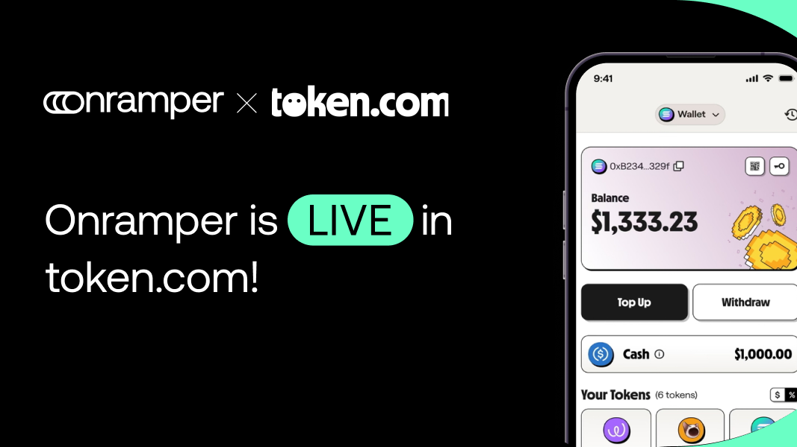
Token.com Enters Partnership with Onramper
As the exclusive onramp for token.com’s revamped Solana wallet, Onramper enables seamless, in-app funding with 130+ payment methods.
April 23, 2025 – Onramper, the world’s leading fiat-to-crypto on-ramp aggregator, today announced an exclusive partnership with token.com, a social-fi crypto platform that lets users interact with token projects as they would with social media profiles. As the exclusive onramp provider for token.com’s newly revamped Solana wallet, Onramper enables users to fund their wallets directly in-app using 130+ payment methods.
Token.com is revolutionizing crypto discovery with a TikTok-style feed, where users scroll through video reels to explore and learn about various tokens in the crypto ecosystem. With its upgraded Solana wallet and partnership with Onramper, users no longer need to juggle multiple platforms to discover and purchase tokens — wallet funding is now seamless and all in one place.
Alongside accepting 130+ payment methods, Onramper’s industry-leading onramp aggregator enables users to purchase crypto across 190+ countries. This extensive geographic coverage is complemented by sophisticated routing engines that recommend the best conversion for users in real-time — maximizing token.com users’ odds of a successful transaction and ensuring they receive the most crypto for their fiat.
“Education and accessibility are two key components to onboarding the world to crypto. Token.com is making great strides in helping users discover, understand, and track new tokens, while Onramper is the final puzzle piece — enabling seamless token purchases anytime, anywhere, with their preferred payment methods,” said Thijs Maas, CEO of Onramper. “As the platform upgrades its wallet strategy, we're thrilled to be the exclusive partner helping onramp more people into the crypto ecosystem.”
The revamped token.com Solana wallet is available now on the App Store and Google Play.
“At token.com, our mission is to deliver a seamless, user-centric experience from day one,” said Mel Gelderman, CEO of token.com. “When we relaunched with a wallet-first approach, choosing Onramper was an easy decision — not only do they remove the heavy engineering lift of managing 20+ ramps, but their routing engine also ensures each user automatically gets the best option for price and conversion.”
To learn more, please visit onramper.com and token.com.
About token.com
Token.com is revolutionizing crypto discovery and investing through a pioneering social-fi platform that seamlessly merges social discovery with trading capabilities. The TikTok-style video feed transforms complex crypto investing into an intuitive, scroll-based experience where users discover trending Solana tokens and invest through the feed. Token.com is bridging the gap between the billions engaged on social media and the mere 90 million active crypto users worldwide, creating a pathway to onboard the next billion users into the crypto ecosystem.
About Onramper
Onramper is the leading fiat-to-crypto payments aggregator, providing a turnkey API-based solution for dynamically routing fiat-to-crypto onramp flows based on algorithms optimizing for conversion, fees and payment methods. Onramper’s platform allows users of clients to buy 2000+ digital assets, in over 190 countries with over 130 payment methods in 120 currencies, with advanced routing options and unified analytics. The company is based in the Netherlands. To learn more about Onramper, visit www.onramper.com.
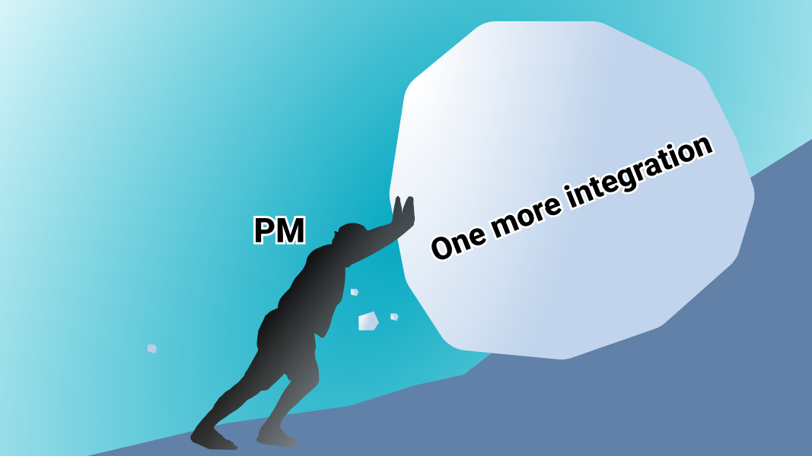
The ‘One More Integration’ Trap: Why Great PMs don't fall for it.
Never ending hassle of managing integrations and expectations with a conventional onramp solution.
You may have been there before. Your team’s focus suddenly shifts to a new country or new on-ramp, a new payment method or UI improvement.
You look at the current product and think, “We just need one more feature, one more integration, and we’ll be done.” So you allocate resources from a dev team that has heard this one before, and push through.
But a few months later, the same conversation happens again. Maybe a new market needs a specific payment method. Compliance requirements shift. User expectations evolve. And suddenly, you’re back to square one, convincing yourself that just one more feature will finally complete the puzzle.
It never does.
You end up in an endless cycle of incremental decisions, each one adding complexity, maintenance, and opportunity cost.
Meanwhile, you are constantly fighting for resources internally, and as time passes you realise you are constantly falling behind on the latest developments. For your onramp stack, you’re lacking smart routing, low-KYC options, DCA, and whatever else the latest craze is.
The sunk cost fallacy in product management
Why does this happen?
In the past, decisions have been made to build, rather than outsource. Time, money, and engineering effort has been spent into building something, and now it’s hard to stop. The logic goes:
"We’ve already integrated three, four, or even five on-ramps. We’ve done so much work—why not just add one more instead of rethinking our approach?"
This is the sunk cost fallacy in action.
Each new integration feels like a small step forward, but in reality, it’s a growing web of maintenance, dependencies, and technical debt. Every time you choose to build instead of leveraging an existing solution, you’re committing your team to ongoing upkeep, often at the cost of innovation elsewhere.
Meanwhile, your competitors, who aren't stuck in this cycle, are shipping faster and capturing more market share.
The true cost of “one more feature”
Saying yes to another feature or integration might seem like the logical choice, but it comes at a cost:
💸 Mounting maintenance – More integrations = more code to maintain, more bugs to fix, and more time spent on infrastructure instead of product innovation.
⏳ Opportunity costs – Every hour spent integrating another on-ramp is an hour not spent on features that actually differentiate your product.
🔄 Vicious cycle – The next request is always around the corner. Today it’s an on-ramp for Brazil. Tomorrow, it’s Venmo. Then a better KYC process. The cycle repeats indefinitely.
At some point you have to ask: Are we moving forward, or just running in circles while others pass us by?
Breaking the cycle with smart decision-making
The good news is you don’t have to keep making the same decision.
Instead of constantly adding one more integration, Onramper removes blockers and future-proofs your payments infrastructure.
And let’s clear up a few common misconceptions:
🚫 "But Onramper locks us in!" → No, you can still negotiate your own deals with on-ramps and stay in control of commercial terms.
🚫 "But we’d have to replace our existing stack!" → Nope. Onramper can complement your current setup, so you don’t have to rip anything out.
🚫 "But pricing will be worse!" → Nope. Onramper doesn’t add fees on onramps’ pricing. Your pricing will actually improve due to more competition and fee transparency, while your conversion skyrockets due to smarter routing.
Instead of adding one-off integrations every few months, Onramper gives you a scalable, adaptable solution that evolves with your needs—without the constant firefighting.
Taking the smarter path
Product management is about making trade-offs. But the best PMs don’t just optimize for today—they optimize for velocity, ensuring that every decision makes future decisions easier.
The next time you find yourself saying "just one more feature," take a step back.
Are you really solving the problem with another integration? Or are you adding onto the real problem?
The best PMs are those who are not afraid to learn from the past. Those who break free from it. In this light - It’s great to see more and more leading exchanges and wallets like Exodus, Gate.io and Bitget break the endless cycle with Onramper - so they never have to do 'one more integration'.
Join the movement - stop getting trapped in an endless cycle. Talk to us today.
Onramping Mistakes wallets make - Part II
In Part 1 we walked through some of the mistakes wallets make when building their on-ramp flows. Now we’ll take a closer look at some of the design elements that lead to suboptimal conversions.
When it comes to fiat on-ramping, UX is king. And while the UX of ramps providers certainly leave a lot to be desired - UI bugs, mediocre card conversion, clunky Know-Your-Customer processors - there’s also a lot that’s in control of the wallets that integrate these services.
In Part 1 we walked through some of the mistakes wallets make when building their on-ramp flows. Now we’ll take a closer look at some of the design elements that lead to suboptimal conversions.
Choice over-load for users
A user that buys crypto just wants one thing: to get from fiat currency to their preferred cryptocurrency. They don’t care who makes the sale.
Why then do wallets often display entire lists of different third-party brokers, most of whom have no brand recognition for the user? Just see some of these examples:
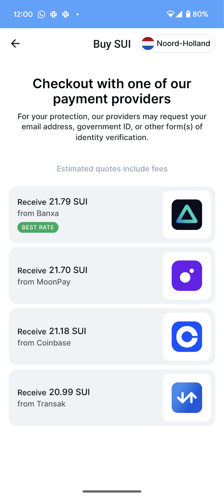
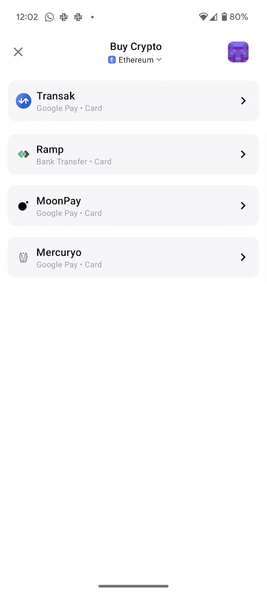
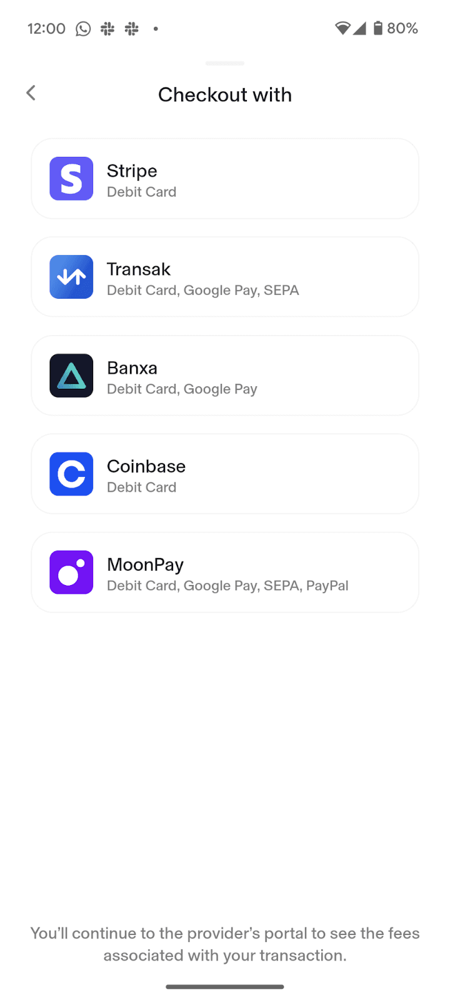
Often the answer provided is that this empowers users to choose their preferred ramp provider. They’re also able to compare the amount of crypto they get across providers, or which payment methods are supported.
But as we explained in a previous article, ramps will sometimes engage in fee spoofing, meaning this information isn’t always accurate. This illusory choice can actually result in transactions being more expensive for the user.
The agency to choose their onramp might be of importance for crypto-native users who might already have an account somewhere, it is possible to retain agency without overloading users with choice. In addition, we’ve previously shown that its crucial to return users to the ramp providers they have used before.
The Solution: Nudging
Instead of being presented with multiple options, users should be funneled down the path with the best combination of low fees and high conversion rates via an intelligent routing.
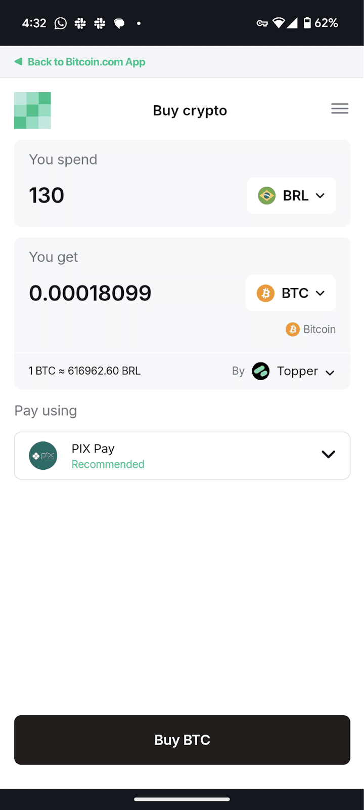
By pre-selecting for the user based on an intelligent routing engine, it’s possible to increase the conversion rate immensely.
Our data shows that 80% of users follow the recommendations made by Onramper! The trick here is to make sure onramp selection is not a mandatory elements of the user-flow. Instead, the user should be nudged to the best onramp, with the option to select something else for those users that want to self-select. The results of nuding in combination with smart onramp routing speak for themselves:
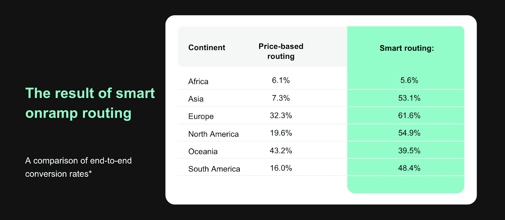
Hard-coded fees and settlement times
Another often-repeated sin is showing the user hardcoded information on the available paths. The intent can be noble: to inform the user to make better choices.
In practice, however, many wallets don’t build the actual infrastructure to make this information meaningful.
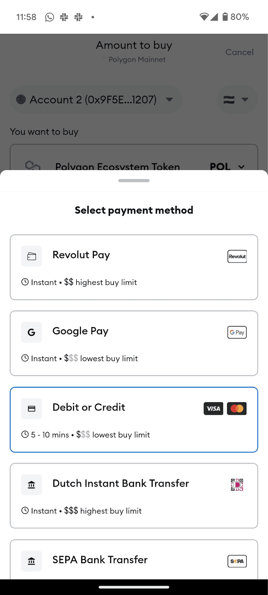
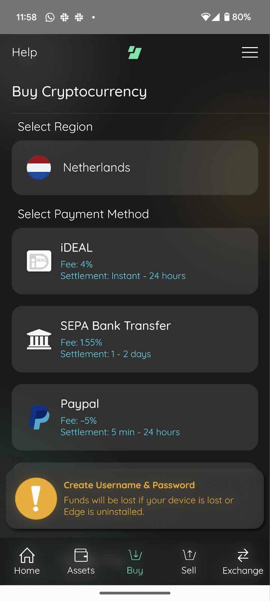
For example, data can be displayed that shows which payment methods are supported, which are priciest, and the expected time for a payment to complete. But displaying each of these data points has its flaws:
- Displaying which payment methods are supported often results in payment methods that are not relevant to the location being displayed. Moreover, not every payment method is available for every fiat currency or pair, so this info is often misleading.
- Displaying a “payment method fee” doesn’t tell the full story when it comes to pricing: a low-fee payment method can be more expensive than a high-fee payment method since the on-ramp might increase spread.
- Displaying the time it takes to complete a transaction is difficult to do accurately, since it often depends on the on-ramp’s and the user’s banking infrastructure. E.g. SEPA can take 1-3 minutes or 1-3 days, depending on whether the sending and receiving banks support SEPA Instant.
Hardcoded data can also become out-of-date as things evolve.
The solution:
It’s best to avoid displaying hardcoded data altogether and instead use dynamic engines to display the right payment methods and information. In this, Onramper is your best friend, with dynamic payment method recommendation engines, real-time quotes and onramp routing algorithms at your fingertips.
Closing thoughts
Optimizing on-ramp flows for conversion requires strategic design decisions that ensure every step guides users seamlessly toward a completed transaction.
In our next post, we’ll dive deeper into some of the mistakes wallets make when it comes to data analytics.
In the meantime, I invite everyone - client or not - to have OnRamper analyze your app. We’ll do a free analysis to identify the good, the bad, and the ugly. Schedule a call via the link above and reply with: "Please analyze my current setup."
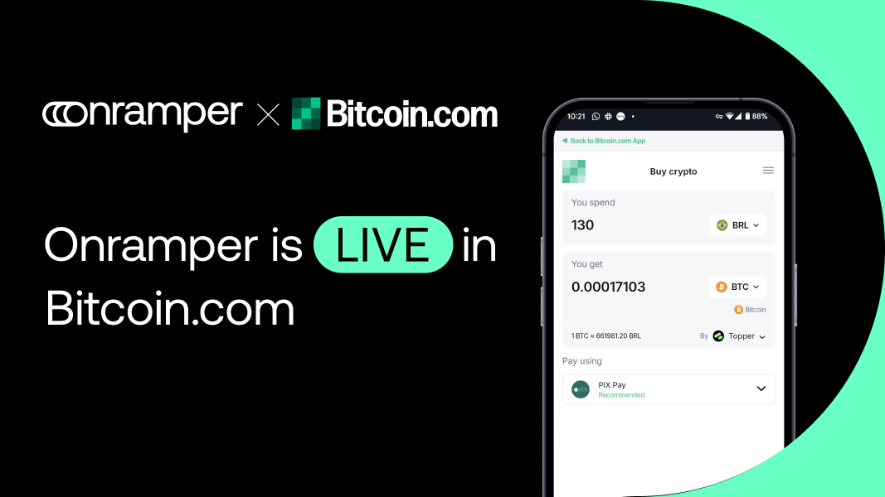
Bitcoin.com partners exclusively with Onramper for global APMs
Onramper announced today an exclusive partnership with Bitcoin.com, a pioneer in the cryptocurrency space with 55+ million self-custody wallets created.
Onramper announced today an exclusive partnership with Bitcoin.com, a pioneer in the cryptocurrency space with 55+ million self-custody wallets created, to power support for alternative payment methods (APMs) around the world. As part of this collaboration, Bitcoin.com will integrate Onramper’s industry-leading on- and off-ramp solutions for global processing on the Bitcoin.com website and the Bitcoin.com Mobile Wallet app.
Integrating local payment providers across geographies presents a tedious, resource-intensive challenge for crypto platforms. Onramper solves this obstacle by aggregating alternative payment methods into one solution, making onboarding users easier than ever. Bitcoin.com will leverage Onramper’s solution to onboard users around the world, from LatAm, Africa, SEA, and beyond.
“Bitcoin.com serves as a gateway for millions to engage with Bitcoin and other tokens. We’re pleased to help expand its global user base and ensure support for over 130 local payment methods worldwide,” said Thijs Maas, CEO of Onramper. “Alternative payment methods can double the success rates of crypto purchases and play a crucial role in increasing access to the crypto ecosystem, while enhancing the overall user experience.”
Onramper’s on-ramp aggregator enables users to purchase crypto across 190+ countries and 130+ local payment methods. This extensive geographic coverage is complemented by sophisticated routing engines that recommend the best conversion for users in real-time — maximizing the odds of a successful transaction and ensuring that users receive the most crypto for their fiat.
Released in September 2024, Onramper’s off-ramp service enables partners to integrate the world’s best off-ramps in a single sweep and ensure global coverage, diverse payout methods, and best-price execution. Off-ramp coverage spans support for 46 fiat currencies and 500+ cryptocurrencies across 200 countries, off-ramping to 32 payment methods including credit/debit cards, bank accounts, and PayPal.
“At Bitcoin.com, we’re all about making Bitcoin and crypto accessible to everyone, everywhere,” said Bitcoin.com CEO Corbin Fraser. “The economic freedom these technologies offer can unlock incredible opportunities, and onboarding more people is key to that mission. Partnering with Onramper helps us do just that — making it easier for users in a wide variety of countries to enter the space using the payment methods that work best for them. It’s a big step toward breaking down barriers and expanding global access to crypto.”
Bitcoin.com is available in 190+ countries. Over 55 million self-custody wallets have been created in the multichain Bitcoin.com Wallet since its launch, and the app has been downloaded more than 10 million times across iOS and Android devices.
Onramper is now live on the Bitcoin.com website and the Bitcoin.com Mobile Wallet app.
To learn more, please visit onramper.com and wallet.bitcoin.com.
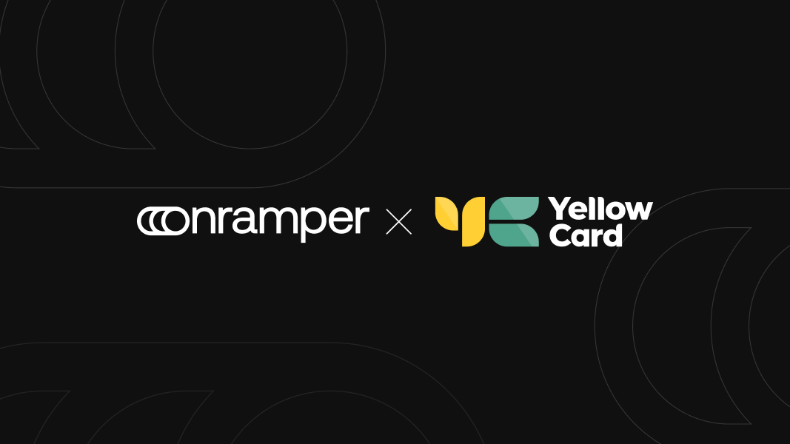
Yellow Card Partners with Onramper
Onramper today announced a partnership with Yellow Card, Africa's leading stablecoin on- and off- ramp, to enhance fiat-to-crypto onboarding across the continent.
November 26, 2024 – Onramper today announced a partnership with Yellow Card, Africa's leading stablecoin on- and off- ramp, to enhance fiat-to-crypto onboarding across the continent. As part of the collaboration, Onramper will integrate Yellow Card’s on- and off-ramps into its aggregation offering.
Yellow Card launched in Nigeria in 2019 and has quickly become one of Africa's fastest-growing fintechs, now present in 20 countries with over 1.7 million retail customers. It is the first and largest licensed stablecoin on- and off-ramp on the African continent, providing secure and cost-effective methods to buy and sell USDT, USDC, and PYUSD via local currency and its Payments API.
Onramper will add three of Yellow Card’s local payment methods to its growing stack, enabling the purchase of stablecoins (and other coins) in 20 African countries using local mobile money, bank transfers, and instant peer to peer bank transfers.
Notably, Nigeria ranked #2 in the Chainalysis 2024 Global Crypto Adoption Index, a report identifying countries leading the world in grassroots crypto adoption. Through Onramper’s partnership with Yellow Card, Nigerian users of all of Onramper’s clients can now easily access crypto.
“Nigeria is a key market for many digital wallets, with a large user base that seeks to onboard into the crypto ecosystem,” said Thijs Maas, CEO of Onramper. “Our work with Yellow Card will improve access to crypto, making it more localized for users in Nigeria and across Africa as a whole.”
Onramper’s industry-leading on-ramp aggregator enables users to purchase crypto across 190+ countries and 130+ local payment methods. This extensive geographic coverage is complemented by sophisticated routing engines that recommend the best conversion for users in real-time — maximizing the odds of a successful transaction and ensuring that users receive the most crypto for their fiat.
“As we continue to drive financial inclusion across Africa, our partnership with Onramper marks a pivotal step toward making digital assets more accessible and user-friendly. This collaboration is more than just a technological integration—it’s a pathway to economic resilience and a step forward in empowering Africans to take control of their financial futures.” — Gillian Darko, Chief of Staff and Director of Strategy at Yellow Card
With the addition of Yellow Card, Onramper boasts an impressive lineup of 27 on-ramps for the best crypto experience around the world.
About Yellow Card
Yellow Card is a pan-African Fintech company operating across 20 countries. We are the largestand first licensed Stablecoin on/off ramp on the African continent. We provide businesses of all sizes with secure and cost-effective methods to buy and sell USDT, USDC, and PYUSD via their local currency directly and through our Payments API.
Founded in 2016 by Chris Maurice (CEO) and Justin Poiroux (CTO), Yellow Card launched inNigeria in 2019, and since then it has quickly grown to be one of the fastest-growing fintechs inAfrica, with a presence in 20 countries and over 1.7 million retail customers.
In 2023, Yellow Card was awarded the prestigious “Disrupter of the Year” award at the Africa Financial Industry Summit (AFIS). The award acknowledges companies that have demonstrated resilience in challenging times and whose innovation represents a market disruption.

Onramper to Support Ramps Infrastructure for World App, Flagship Wallet of Worldcoin Ecosystem
Onramper to Support Ramps Infrastructure for World App, Flagship Wallet of Worldcoin Ecosystem
Onramper, the world’s leading fiat-to-crypto on-ramp aggregator, today announced it will provide ramp infrastructure for World App while spreading adoption of Worldcoin (WLD) on Optimism and the newly launched World Chain blockchain. Launched on mainnet today, World Chain is a blockchain designed for humans, built to scale the Worldcoin protocol and the broader Ethereum community to 1 billion people and beyond.
As part of the partnership, World App, the flagship wallet of the Worldcoin ecosystem, will integrate Onramper’s new on and off-ramp stack, ensuring support for WLD and USDC.E on World Chain across Onramper’s robust ramp ecosystem. This integration enables users globally to on- and off-ramp via World Chain to bank accounts, cards, PayPal, as well as allowing users to be onboarded seamlessly on a global scale using over 130 local payment methods.
Released in September 2024, Onramper’s off-ramp service enables partners to integrate the world’s best off-ramps in a single sweep and ensure global coverage, diverse payout methods, and best-price execution. Off-ramp coverage spans support for 46 fiat currencies and 500+ cryptocurrencies across 200 countries, off-ramping to 32 payment methods including credit/debit cards, bank accounts, and PayPal.
“Onramper is proud to be a ramps provider for World Chain, broadening support for the newly launched blockchain across the crypto ecosystem,” said Thijs Maas, CEO of Onramper. “Our ramp infrastructure is known for its smooth flows, with native transaction initiation from the wallet to sell crypto, making it even more convenient for users to engage with WLD.”
Worldcoin launched out of beta in July 2023 to accelerate the adoption of Proof of Personhood and decentralized finance, which will be fundamental in the age of AI. Already more than 15 million people from 160 countries have created a World ID and a compatible wallet, which they’ve used to perform 75 million transactions. As of today, 6,937,842 people have also verified their World ID using an Orb. Over the coming months, World Chain’s Onramper integration will roll out in stages globally.
To learn more, please visit onramper.com and worldcoin.org/world-chain.
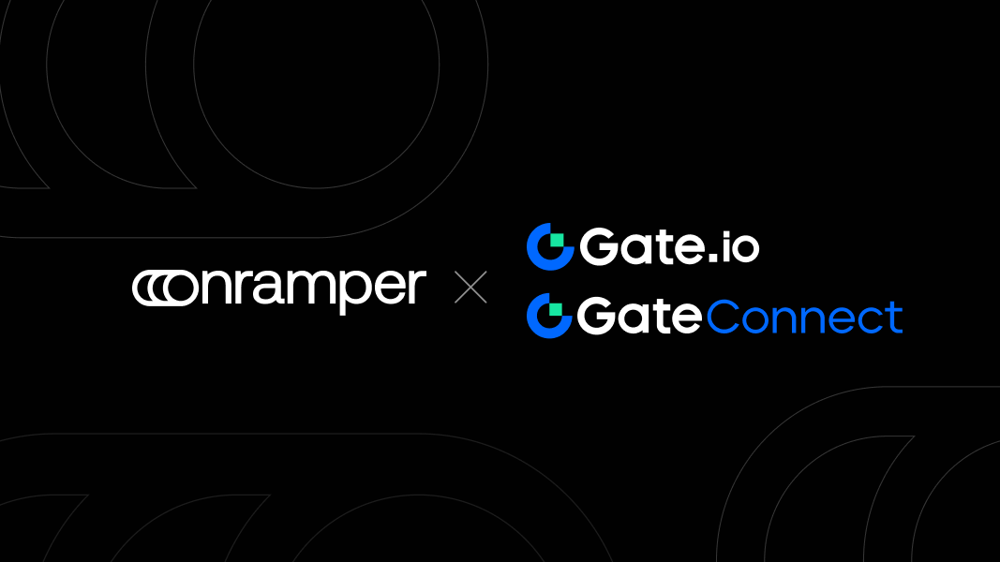
Gate.io Enters Strategic Partnership with Onramper
Gate.io Enters Strategic Partnership with Onramper for Simple Fiat-To-Crypto Conversions on the Gate.io Exchange
October 15, 2024 – Gate.io, a top 5 cryptocurrency exchange by market capitalization, recently announced a strategic collaboration with Onramper, the world's leading fiat-to-crypto on-ramp aggregator. The partnership will focus on cross-integration to make purchasing crypto around the world more convenient and accessible.
Onramper’s industry-leading on-ramp aggregator enables users to purchase crypto across 190+ countries and 130+ local payment methods. This extensive geographic coverage is complemented by sophisticated routing engines that recommend the best conversion for users in real-time — maximizing the odds of a successful transaction and ensuring that users receive the most crypto for their fiat.
Since launching in 2013, Gate.io has quickly become one of the top cryptocurrency exchanges in the world, serving more than 17 million customers. Gate.io is a leader in providing digital asset security, helping to ensure that all assets on the platform are protected from potential hackers. As part of the new partnership, Gate.io will integrate Onramper's on-ramp stack to significantly increase the number of payment methods available to users and improve transaction success rates. This will greatly enhance the user experience for Gate.io's 17 million+ users. Gate.io will also benefit from access to Onramper's Terminal, providing the exchange with valuable insights that can help Gate.io make additional improvements to its platform.
When asked about the partnership, Dr. Lin Han, Gate.io Founder and CEO, stated, "This integration with Onramper will help us make purchasing crypto easier than ever before for our existing users and will help us to reach new users interested in purchasing their first crypto using fiat currencies."
Gate Group recently added GateConnect to its growing product ecosystem, an on- and off-ramp to convert fiat into crypto. Today, GateConnect enables users to exchange between 30+ fiat currencies and 1,600+ cryptocurrencies using debit cards, credit cards, and bank transfers. Onramper will integrate GateConnect to its growing on-ramp aggregator, allowing users to seamlessly purchase crypto in non-custodial wallets globally.
In reference to the partnership with Gate.io, Thijs Maas, CEO of Onramper said,“We’re thrilled to collaborate with Gate.io as it broadens its on-ramp capabilities and looks to enhance fiat onboarding. This mutually-beneficial integration will improve both Gate.io and Onramper’s offerings while positively impacting the crypto ecosystem as a whole.”
Both Gate.io and Onramper look forward to providing a more complete cryptocurrency trading experience to crypto enthusiasts and those new to the industry via this partnership.
About Gate.io
Gate.io is one of the world’s earliest cryptocurrency exchanges and a leader among compliant and secure digital asset platforms, offering diverse trading services with 100% user-verifiable Proof of Reserves. Further, the platform has consistently ranked as one of the top cryptocurrency exchanges based on liquidity and trading volume. Besides its primary exchange services, Gate.io has diversified its ecosystem to offer decentralised finance, research and analytics, venture capital investing, wallet services, startup incubation, and more.
About Onramper
Onramper is the leading fiat-to-crypto payments aggregator, providing a turnkey API-based solution for dynamically routing fiat-to-crypto onramp flows based on algorithms optimizing for conversion, fees and payment methods. Onramper’s platform allows users of clients to buy 2000+ digital assets, in over 190 countries with over 130 payment methods in 120 currencies, with advanced routing options and unified analytics. The company is based in the Netherlands. To learn more about Onramper, visit www.onramper.com.
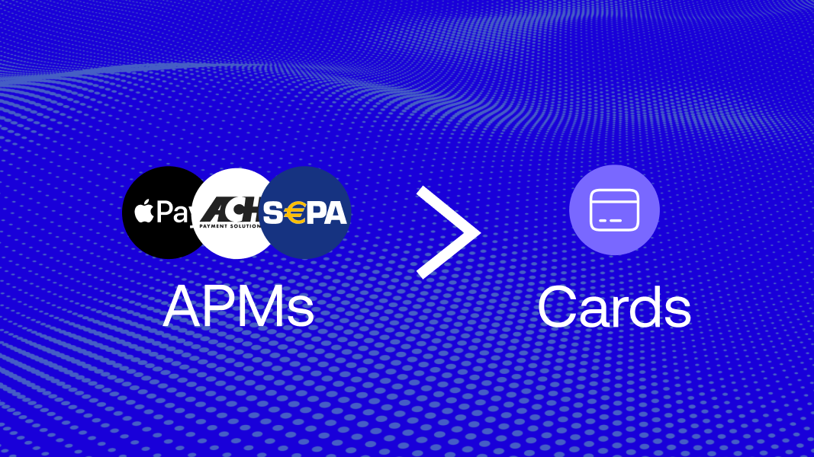
Unlocking high conversions - the importance of local payment methods
How alternate payment methods provide higher conversion rates.
Let’s face it—nothing disrupts a user journey like a failed transaction. Every missed payment is a missed opportunity. With so much on the line, users should be offered the highest-converting payment methods and on-ramps when purchasing crypto.
Sadly, this is rarely the case.
Addressing the core issue: Localization
Localization is when you tailor your payment flows to meet the cultural and regulatory needs of different geographies.
If you don’t localize, you’re not alone. Even leading wallets like MetaMask and Trust have no smart logic behind which payment methods and on-ramps are offered to its users.
Users are often pushed to use credit cards despite this method having low adoption rates (and even lower conversion rates) in many parts of the world.
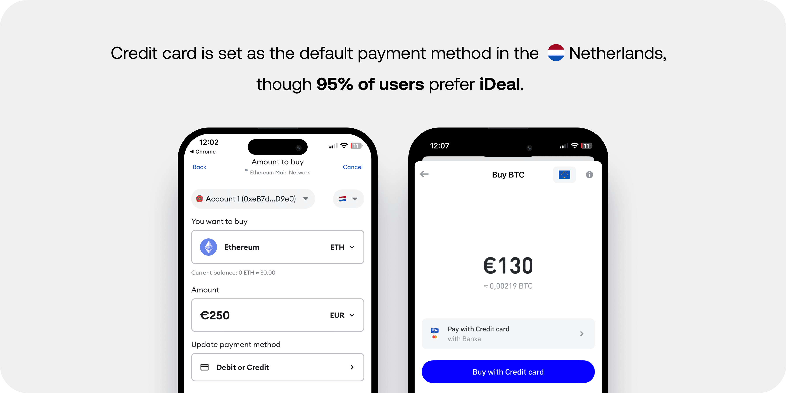
Did you know that offering the right local payment methods can dramatically increase conversion rates?
The data is clear:
- Netherlands: 95% of users prefer iDEAL, which boasts an 80%+ conversion rate (credit card transactions lag at 30%)
- India: UPI conversion rates hover around 40%, while cards are practically non-existent
- Germany: Revolut outshines credit cards in performance
- Indonesia: QRIS dominates with a conversion rate of 56%, compared to just 3.6% for cards
This illustrates a key point: offering local payment methods and nudging users toward the best-performing option can completely transform your conversion rates.
Imagine reducing the number of clicks your users need to make by simply pre-selecting their local fiat currency and best-performing payment method. This simple optimization has been shown to reduce friction and improve the overall user experience.
How does it work?
Onramper allows you to detect your user's country through their IP or App Store location.
By pre-selecting the appropriate fiat currency, you streamline the transaction process and increase conversion rates.
The numbers don’t lie
When the right local payment methods are recommended over credit cards, Onramper’s approach leads to an average 132.2% increase in conversion rates.
In a world where every sale counts, these are the kinds of numbers you can’t afford to ignore.
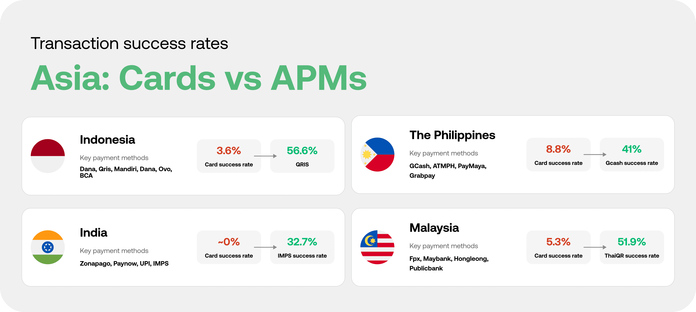
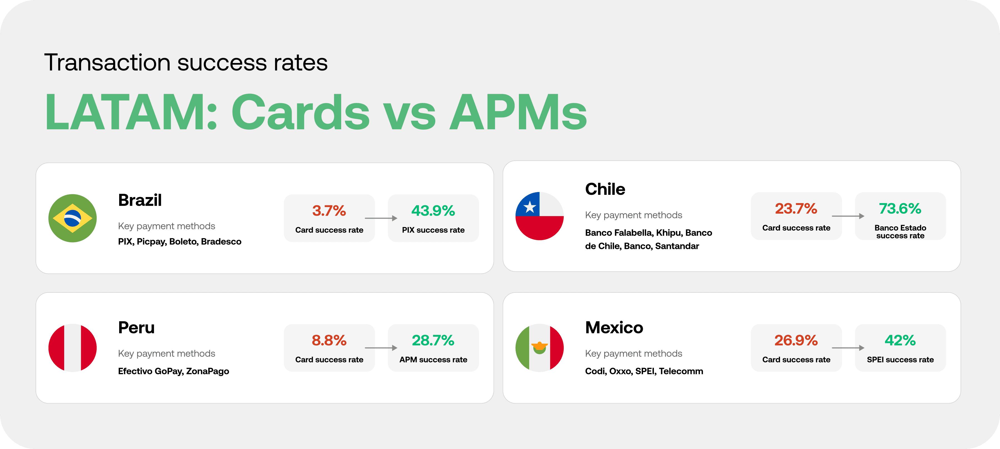
Did you know: Most wallets don’t even localize languages. With Onramper, we provide users a totally native experience by translating the buy flow into their local language.
Maximizing conversions with our APIs
Onramper is the world’s only on-ramp aggregator that allows you to recommend payment methods based on conversion.
Through our Payment Types API, you can retrieve a list of available payment methods based on your user's country, preferred fiat, and desired cryptocurrency. This isn’t just about giving your users more options—it's about making the right options easy to find.
Quality, not quantity
The key to high conversion rates isn’t just offering more payment methods—it’s about offering the right ones.But what do you do if there are multiple on-ramps that support the same payment method?
In that case, the solution is to route users to the best on-ramp. Your routing algorithm should prioritize location and payment method and then select the best on-ramp.
Localization of payment methods is only the first step, however. In our next article, we’ll discuss how your routing engine also affects conversion rates.
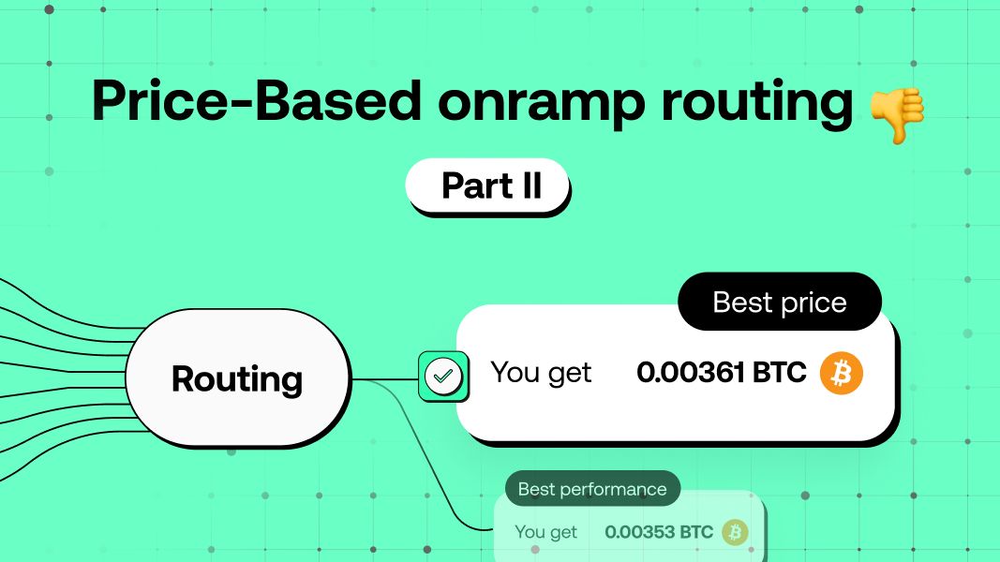
Why you should not rank onramps based on fees - Part II
Why Priced-based ranking is not the best choice?
Price-based on-ramp ranking hurts your user experience. In Part I we covered how ramps lure users with low quotes, only to raise fees mid-transaction and drive them away.
But the problem runs deeper.
Not all ramps are created equal
Price-based ramps marketplaces assume that conversion from ramp to ramp is similar. Nothing could be further from the truth.
The sad reality is that ramps transactions fail more often than not.
Credit cards get declined, bugs cause delays and rejections, and KYC friction results in users giving up mid-transaction.
Pushing users to the ramp that is cheapest is like sending drivers down the shortest road without checking for speed limits and traffic jams. Sure, it may seem like a good idea, but the delays and traffic jams are likely to cost both the user and the ramps provider in the end.
It’s all about conversion
It's not just about who offers the lowest quote—it's about who can deliver results. In an industry where trust is everything, failed transactions create frustration, and frustration creates churn.
When a user’s credit card is declined or they abandon the transaction process due to a poorly designed interface, you've lost more than a completed transaction—you’ve likely lost a customer.
A ramp might rank at the top of your ranking because of low fees, but if only 50% of users complete their purchases, the real cost is steep—up to 50% in lost revenues.
What if there’s a ramp that has lower fees, but does not engage in questionable pricing tactics that break user trust? Or what if there’s a ramp with a 75% success rate but doesn’t get used because it is slightly more expensive?
A successful user experience should select the ramp with the highest conversion rate, the least friction in KYC, and the smoothest user flow.
Comparing the ‘average’ vs the best ramp
When comparing ramps, it’s crucial to look beyond just the price.
The best-performing ramps, those that consistently convert transactions, have a much higher success rate. For example, while the lowest-priced ramp may convert at an average of 50%, the top-rated ramp by conversion might achieve Y%. That’s a 50% boost in completed transactions, which directly translates to increased revenue and happier users.
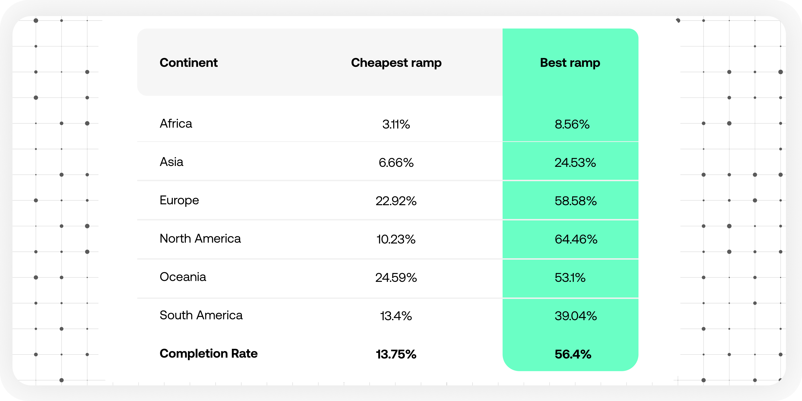
The image above illustrates the stark difference between selecting a ramp based on conversion rates versus selecting one based purely on price. The choice is clear: better performance drives better results, and that’s what keeps users coming back.
The danger of not understanding returning users
It's simple math: the more successful ramp transactions, the more users are onboarded. These same users will come back and use dApps, staking swaps, and so on. The best ramp isn’t the cheapest—it’s the one that keeps users coming back.
Imagine you are a user, who has previously bought crypto through a ramp in your wallet. If suddenly another ramp has become cheaper than the ramp they used previously, you are forcing that user to sign up and go through KYC all over again.
Returning users convert more than 5x better than new users, but only when sent to the right ramp!
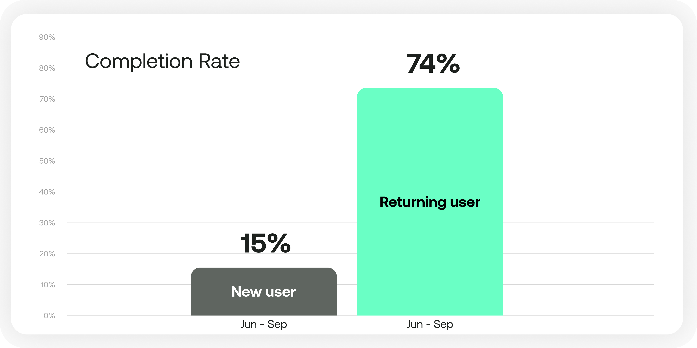
Moving beyond price-based ranking means understanding which ramp to recommend to each individual user. For returning users, this means recommending or labeling the ramp they have previously used in order to make checkout as easy as possible!
Why Onramper's ranking system is different
Onramper’s ranking system doesn’t fall into the price trap. It evaluates ramps based on many real-time performance metrics:
- Conversion rates
- Transaction success
- Returning users
- Pricing
- User experience
This approach ensures your users are routed to the ramp that’s most likely to provide a smooth, successful transaction.
Some clients use our ramp aggregation APIs to get quotes, while others use them to identify the highest-converting ramps. But the best implementations use our APIs to make use of our intelligent ranking system.
By intelligently ranking ramps based on what actually matters, Onramper helps you deliver better results, reduce user frustration, and improve retention. The difference? Your users aren’t just clicking on the cheapest quote—they’re completing transactions.
In Part 3 of this series, we’ll dive into how Onramper’s ranking works in greater detail.
Ready for a change?
If you want to dive deeper into how Onramper can increase both your ramp coverage and conversion to offer a superior user experience, schedule a chat with our team today.
No results found.